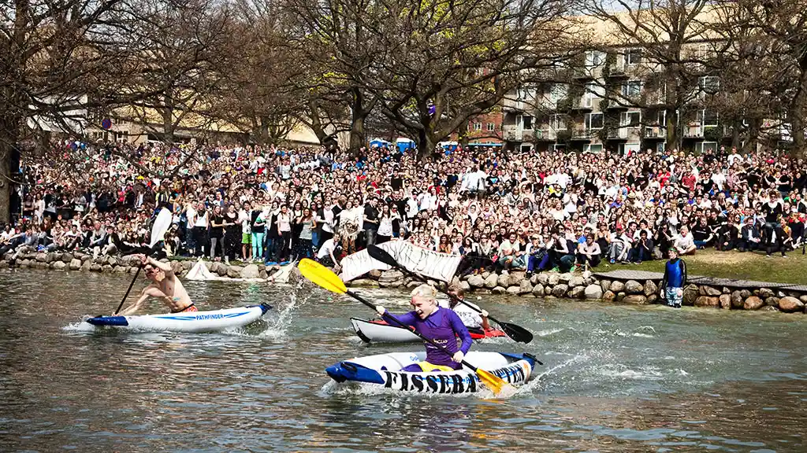
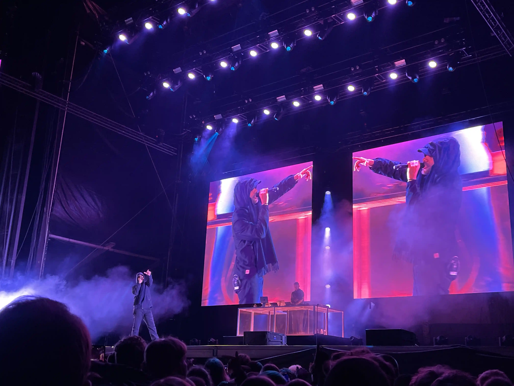
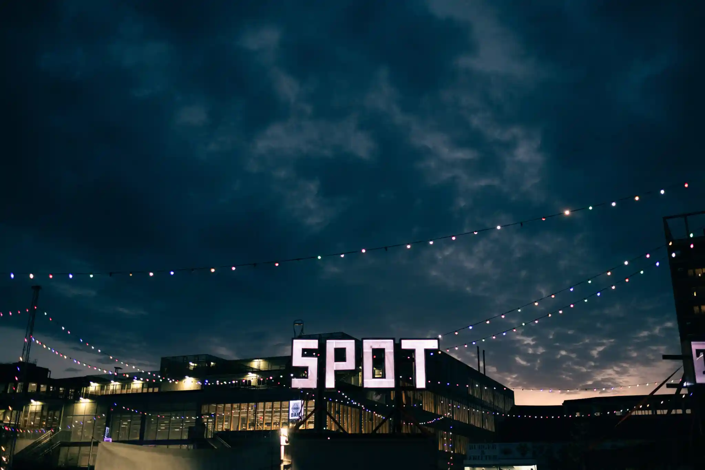

BYENS EVENTS TIL UNGE OG STUDERENDE
DIN GUIDE OVER DIVERSE EVENTS OG ARRANGEMENTER I AARHUS. UANSET OM DU SØGER FAGLIGE WORKSHOPS, NETVÆRKSARRANGEMENTER, SOCIALE
AKTIVITETER ELLER SPÆNDENDE FOREDRAG, HAR VI SAMLET ALT DET BEDSTE FOR STUDERENDE I BYEN. HOLD DIG OPDATERET OG UDFORSK NYE
MULIGHEDER FOR AT LÆRE, MØDE ANDRE OG FÅ MEST MULIGT UD AF STUDIELIVET I AARHUS.
HER ER VORES FEM ABSOLUT FAVORIT ARRANGEMENTER I AARHUS - DEM SOM DU BARE IKKE MÅ GÅ GLIP AF.
1. KAPSEJLADS
DER FINDES IKKE NOGEN STØRRE ELLER BEDRE STUDENTERBEGIVENHED I DANMARK - MÅSKE ENDDA I HELE VERDEN. MENS AARHUS SOVER, SLÅR DE
FØRSTE STUDERENDE SIG NED I UNIVERSITETSPARKEN. TRADITION TRO ER REKTOR OG BORGMESTER AT FINDE PÅ PLADSEN. BARER, MADBODER,
STORSKÆRME, NØGENLØB OG LIVE-MUSIK OMFAVNER DAGENS OMDREJNINGSPUNKT - EN OPHIDSENDE KAPSEJLADS, DER SIDEN 1991 HAR VÆRET TRADITION
PÅ SØEN I UNIVERSITETSPARKEN.
ALT DETTE FOREGÅR MIDT I AARHUS BY, OG DET ER EN BEGIVENHED DU, SOM STUDERENDE, IKKE MÅ GÅ GLIP AF.

KILDE: AARHUS UNIVERSITET
2. DANMARKS STØRSTE FREDAGSBAR
DANMARKS STØRSTE FREDAGSBAR I AARHUS ER EN LEGENDARISK BEGIVENHED, DER SAMLER STUDERENDE FRA HELE BYEN TIL EN AFTEN FYLDT MED
SJOV, SOCIALISERING OG UNDERHOLDNING. MED ET VARIERET PROGRAM, DER INKLUDERER DJ'S, LIVE MUSIK OG SPIL, ER DENNE FREDAGSBAR EN
UFORGLEMMELIG OPLEVELSE FOR ALLE DELTAGERE. ATMOSFÆREN ER FESTLIG, OG DET ER EN IDEEL MULIGHED FOR AT MØDE NYE MENNESKER, SLAPPE AF
OG FEJRE UGENS AFSLUTNING. UANSET HVORFOR DU KOMMER, ER DANMARKS STØRSTE FREDAGSBAR DET PERFEKTE STED AT NYDE EN AFTEN MED VENNER
OG FEJRE STUDIELIVET.
3. NORTHSIDE

NORTHSIDE FESTIVAL ER EN POPULÆR MUSIKFESTIVAL, DER AFHOLDES ÅRLIGT I AARHUS, DANMARK. FESTIVALEN TILTRÆKKER MUSIKELSKERE
FRA HELE LANDET OG BYDER PÅ ET SPÆNDENDE PROGRAM MED BÅDE NATIONALE OG INTERNATIONALE KUNSTNERE. MED FOKUS PÅ BÆREDYGTIGHED OG
GRØN LIVSSTIL KOMBINERER NORTHSIDE EN FESTLIG ATMOSFÆRE MED ET VÆLD AF MUSIKGENRER, FRA ROCK OG POP TIL ELEKTRONISK MUSIK. UDOVER
DE FANTASTISKE KONCERTER KAN FESTIVALEN OGSÅ PRALER AF KREATIVE MADBODER, KUNSTINSTALLATIONER OG EN LIVLIG FESTIVALSTEMNING, HVAD
GØR DEN TIL EN UFORGLEMMELIG OPLEVELSE FOR ALLE DELTAGERE.
4. SPOT FESTIVAL
SPOT FESTIVAL ER EN ÅRLIG MUSIKFESTIVAL I AARHUS, DER FOKUSERER PÅ NY OG SPÆNDENDE DANSK MUSIK. FESTIVALEN TILTRÆKKER BÅDE ET
HÅNDVÆRK AF EMERGING ARTISTER OG VELETABLERET TALENT, OG DEN TILBYDER EN VARIATION AF GENRER, HERUNDER ROCK, POP, HIP HOP OG
ELEKTRONISK MUSIK. SPOT FESTIVAL ER IKKE BARE EN MUSIKOPLEVELSE, MEN OGSÅ EN PLATFORM FOR NETVÆRKING OG SAMARBEJDE INDEN FOR
MUSIKBRANCHEN, HVOR ARTISTER, PRODUCENTER OG INDUSTRIENS PROFESSIONELLE MØDES FOR AT UDVEKLE IDÉER OG INSPIRATION. MED EN LIVLIG
ATMOSFÆRE OG ENGAGERENDE OPTRÆDENDER ER SPOT FESTIVAL EN UFORGLEMMELIG BEGIVENHED FOR ALLE MUSIKENTUSIASTER.

KILDE: SPOTFESTIVAL.DK, MILLE RAABY
5. AARHUS FESTUGE
AARHUS FESTUGE ER EN ÅRLIG KULTURFESTIVAL, DER FEJRER KUNST, MUSIK, TEATER OG SAMFUNDSENGAGEMENT I AARHUS. MED ET SPÆNDENDE
PROGRAM BESTÅENDE AF KONCERTER, UDSTILLINGER, FORESTILLINGER OG INTERAKTIVE ARRANGEMENTER TILTRÆKKER FESTUGEN BESØGENDE FRA HELE
LANDET. FESTUGEN ER EN UNIK MULIGHED FOR AT UDFORSKE BYENS KULTURLIV OG DELTAGE I FÆLLESSKABET, HVOR MENNESKER I ALLE ALDRE KAN
NYDE KREATIVITETEN OG FÆLLESSKABET. MED SIN LIVLIGE ATMOSFÆRE OG MANGFOLDIGE AKTIVITETER ER AARHUS FESTUGE EN UFORGLEMMELIG
OPLEVELSE, DER FEJRER ALT, HVAD BYEN HAR AT BYDE PÅ.